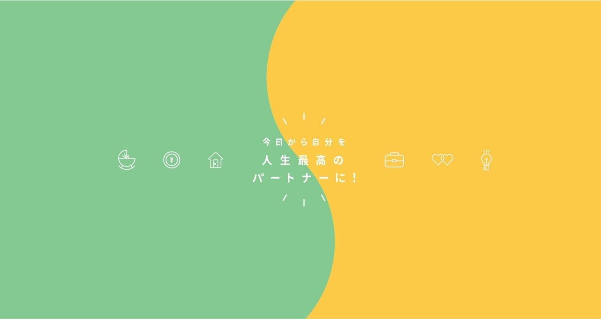
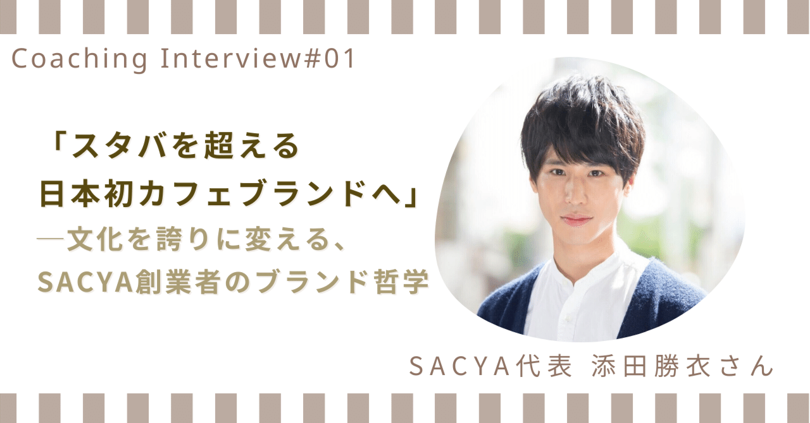
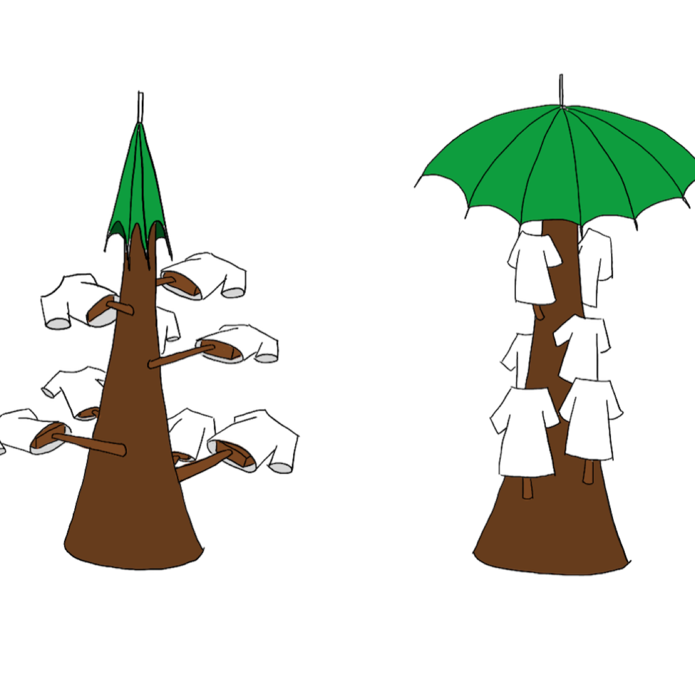

Work
Selected projects across design, community, and engineering — and long-term professional work in strategy and organizational change.
Projects

Self-Partnership BOOK
Co-founded a free media built on the concept of "making yourself your life's strongest partner" — helping people in their mid-20s make life decisions grounded in what matters to them, across career, money, lifestyle, and relationships. Led a 7-member team publishing articles twice weekly, interviews, and workshops. note →

Brand Mission-Vision-Values through Coaching
Through a ~2-year coaching engagement, supported the founder of matcha café brand SACYA in articulating mission, vision, and values rooted in Okakura Tenshin's Book of Tea — as the brand grew from solo menu development to a Shibuya Scramble location loved by international visitors. Case story →

Bonsai — Smart Clothes-Drying Stand
A bonsai-inspired drying stand that senses rain, folds its "branches" with an umbrella-style link mechanism, and opens a protective canopy. Built with Fusion 360, 3D printing, laser cutting, and M5Stack with app control; adopted by UTokyo's Hongo Tech Garage fund. Project site →
Palm Letter Session — Zen2.0 Kamakura
A "place design" workshop accepted to Zen2.0 — an international mindfulness conference held at Kenchoji Temple since 2017 — combining a letting-go meditation with letters written on palms, reconnecting participants with their authentic selves. Kamakura Mindful City →

CS Intro Web Guide for Women
Founded a beginner-friendly CS media for women entering tech. Led a 4-member team from user interviews to content design and launch.

CanSat & NASA — Space Education Program
Selected for a year-long hands-on space program led by astronaut Chiaki Mukai, JAXA, and Tokyo University of Science: built a CanSat (model satellite), was dispatched to NASA's Johnson & Ames centers, and completed parabolic-flight training.

TOMODACHI Annual Summit 2018 — Core Committee
Planned and ran the several-hundred-person annual summit of the TOMODACHI Initiative — a U.S.–Japan public-private partnership led by the U.S.-Japan Council and the U.S. Embassy — curating speakers and designing content that bridges the two countries. Summit video →
Professional Experience
Dynamic-Equilibrium Management — Thought Leadership Strategy
Leading, from zero, the development of a management framework that translates the biological concept of dynamic equilibrium into a human-centered, Japan-origin theory of management — in collaboration with biologist Prof. Shin-Ichi Fukuoka (visiting professor, Rockefeller University) and Prof. Kazuo Ichijo (IMD). Building the implementation engine: transformation offerings, an executive consortium, and engagement of 100+ internal members.
A2E (Ability to Execute) — Japan Launch
Drove the Japan launch of McKinsey Academy's organizational-change program with its founding Senior Partner: designed and facilitated executive workshops, trained client facilitators, packaged the offering, and led internal business development to expand it to other leading companies.
Google — Software Engineering Internship (Translation Team)
Proposed and implemented UI/UX on Google Translate (JavaScript, front- and back-end) encouraging users to contribute translation data, validating impact across locales. Earlier completed Google STEP (Summer Trainee Engineering Program, 2018).
Deeptech Entrepreneurship Course — Senior Advisor
Senior advisor to the University of Tokyo's deeptech entrepreneurship course: program design and operations, lecturer and guest-speaker coordination, and mentoring of student founders.